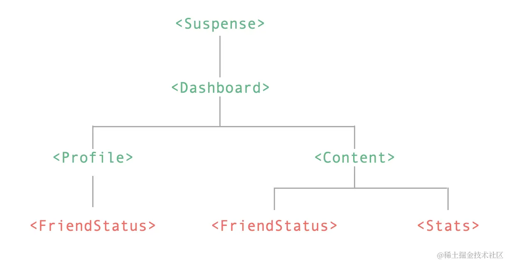
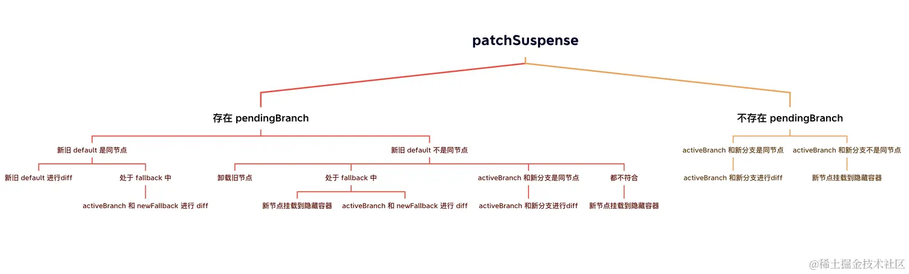

<Suspense> 是一个内置组件，用来在组件树中协调对异步依赖的处理。可以帮助我们更好的完成组件树父组件对子组件的多个嵌套异步依赖关系的管理，当父组件处于等待中时，允许我们自定挂载一个加载中状态。

上图中，红色字体代表的是组件有异步的 setup() 。 通过 <Suspense> 组件我们可以很容易实现在组件异步加载时统一展示加载中状态，在所有组件完成加载时，再统一展示：
html复制代码<Suspense>
<!-- 具有深层异步依赖的组件 -->
<Dashboard />
<!-- 在 #fallback 插槽中显示 “正在加载中” -->
<template #fallback>
Loading...
</template>
</Suspense>
接下来我们将深度解读 <Suspense> 组件实现的原理。
<Suspense> 组件和所有内置组件一样，也是有初始化挂载的过程，先来看看 Vue 对 <Suspense> 组件的源码定义：
js复制代码export const SuspenseImpl = {
name: 'Suspense',
// Suspense 组件标识符
__isSuspense: true,
process(...) {
if (n1 == null) {
// 初始化挂载的逻辑
} else {
// diff 的逻辑
}
},
create: createSuspenseBoundary,
normalize: normalizeSuspenseChildren
}
process 的执行时机和前面提到的 <Teleport> 组件是一致的，会在 patch 的时候根据组件的 shapeFlag 标志来判断是否需要执行 process 函数的调用。
js复制代码const patch = (n1, n2, container, anchor, ...) => {
// ...
const { type, ref, shapeFlag } = n2
switch (type) {
// 根据 type 类型处理
case Text:
// 对文本节点的处理
processText(n1, n2, container, anchor)
break
// 这里省略了一些其他节点处理，比如注释、Fragment 节点等等
// ...
default:
// 根据 shapeFlag 来处理
// ...
else if (__FEATURE_SUSPENSE__ && shapeFlag & ShapeFlags.SUSPENSE) {
// 对 Suspense 节点进行处理
type.process(
n1,
n2,
container,
anchor,
parentComponent,
parentSuspense,
isSVG,
slotScopeIds,
optimized,
internals
);
}
}
}
接下来，我们着重先来看看 Suspense 的初始化挂载逻辑，这块的代码集中在 mountSuspense 中：
js复制代码function mountSuspense(vnode, container, anchor, parentComponent, parentSuspense, isSVG, slotScopeIds, optimized, rendererInternals) {
const {
p: patch,
o: { createElement }
} = rendererInternals
// 创建隐藏容器，用来实例化挂载 default 插槽内的内容
const hiddenContainer = createElement('div')
// 构造一个 suspense 对象，并赋值给 vnode.suspense
const suspense = (vnode.suspense = createSuspenseBoundary(
vnode,
parentSuspense,
parentComponent,
container,
hiddenContainer,
anchor,
isSVG,
slotScopeIds,
optimized,
rendererInternals
))
// 离线挂载 default 插槽内的内容
patch(
null,
(suspense.pendingBranch = vnode.ssContent),
hiddenContainer,
null,
parentComponent,
suspense,
isSVG,
slotScopeIds
)
// 如果有异步依赖
if (suspense.deps > 0) {
// 触发 onPending，onFallback 钩子函数
triggerEvent(vnode, 'onPending')
triggerEvent(vnode, 'onFallback')
// 初始化挂载 fallback 插槽内容
patch(
null,
vnode.ssFallback,
container,
anchor,
parentComponent,
// fallback tree 不会有 suspense context
null,
isSVG,
slotScopeIds
)
// 将 fallback vnode 设置为 activeBranch
setActiveBranch(suspense, vnode.ssFallback)
} else {
// 如果 suspense 没有异步依赖，直接调用 resolve
suspense.resolve()
}
}
在开始解读源码之前，我们需要提前认识几个关键变量的含义：
ssContent 代表的是 default 插槽内的内容的 vnode。ssFallback 代表的是 fallback 插槽内的内容的 vnode。activeBranch 代表的是当前激活的分支，就是挂载到页面中的 vnode。pendingBranch 代表的是正处于 pending 状态的分支，一般指还未被激活的 default 插槽内的内容中的 vnode然后我们再来看一下整个 mountSuspense 的过程，首先会创建一个隐藏的 DOM 元素，该元素将作为 default 插槽内容的初始化挂载容器。然后创建了一个 suspense 变量，该变量内部包含了一些的对 <Suspense> 组件的处理函数：
js复制代码function createSuspenseBoundary(vnode, parent, parentComponent, container, hiddenContainer, anchor, isSVG, slotScopeIds, optimized, rendererInternals, isHydrating = false) {
// ...
const suspense = {
vnode,
parent,
parentComponent,
isSVG,
container,
hiddenContainer,
anchor,
deps: 0,
pendingId: 0,
timeout: typeof timeout === 'number' ? timeout : -1,
activeBranch: null,
pendingBranch: null,
isInFallback: true,
isHydrating,
isUnmounted: false,
effects: [],
resolve(resume = false) {
// ...
},
fallback(fallbackVNode) {
// ...
},
move(container, anchor, type) {
// ...
},
next() {
// ...
},
registerDep(instance, setupRenderEffect) {
// ...
},
unmount(parentSuspense, doRemove) {
// ...
}
}
return suspense
}
可以看到，这个 createSuspenseBoundary 函数本身其实并没有做太多的事情，本质上就是为了构造一个 suspense 对象。
接下来会进入到对 default 容器中的内容进行 patch 的过程。在本课程的第二小节中，我们提到了 patch 函数在进行组件实例化的过程中，会执行 setupStatefulComponent 这个设置并运行副作用渲染函数的方法，之前我们只是介绍了该方法处理同步 setup 的情况，而对于 <Suspense> 组件来说，setup 会返回个 promise。我们再来看看对于这种情况的处理：
js复制代码function setupStatefulComponent(instance, isSSR) {
// ...
// 对于 setup 返回是个 promise 的情况
if (isPromise(setupResult)) {
setupResult.then(unsetCurrentInstance, unsetCurrentInstance)
if (__FEATURE_SUSPENSE__) {
// 在 suspense 模式下，为实例 asyncDep 赋值为 setupResult
instance.asyncDep = setupResult
}
}
}
可以看到对于 Suspense 组件来说，其中的 default 内容的 setup 如果返回的是个 pormise 对象的话，则会为将 setup 函数执行的结果 setupResult 赋值给实例属性 asyncDep。那 asyncDep 有什么用呢？
在渲染器执行 mountComponent 的时候，如果存在 asyncDep 变量，则会调用 suspense 上的 registerDep 方法，并为 default 中的插槽节点创建了一个占位符：
js复制代码const mountComponent = (initialVNode, container, anchor, parentComponent, parentSuspense, isSVG, optimized) => {
// ...
// 依赖于 suspense 的异步 setup
if (__FEATURE_SUSPENSE__ && instance.asyncDep) {
parentSuspense && parentSuspense.registerDep(instance, setupRenderEffect)
// 为插槽 vnode 创建注释节点
if (!initialVNode.el) {
const placeholder = (instance.subTree = createVNode(Comment))
processCommentNode(null, placeholder, container, anchor)
}
return
}
// ...
}
这里的 parentSuspense 就是 default 插槽内的第一个父级 suspense 对象。接下来看看 registerDep 的执行逻辑：
js复制代码function createSuspenseBoundary(vnode, parent, parentComponent, container, hiddenContainer, anchor, isSVG, slotScopeIds, optimized, rendererInternals, isHydrating = false) {
// ...
const suspense = {
// ...
registerDep(instance, setupRenderEffect) {
// 是否有异步未处理的分支
const isInPendingSuspense = !!suspense.pendingBranch
if (isInPendingSuspense) {
// deps 这里会被递增，记录依赖的异步数量
suspense.deps++
}
// asyncDep promise 执行
instance
.asyncDep.catch(err => {
// setup return 的 promise 异常捕获
handleError(err, instance, ErrorCodes.SETUP_FUNCTION)
})
.then(asyncSetupResult => {
// 处理一些异常结果
if (
instance.isUnmounted ||
suspense.isUnmounted ||
suspense.pendingId !== instance.suspenseId
) {
return
}
instance.asyncResolved = true
const {vnode} = instance
// setup 处理完成调用
handleSetupResult(instance, asyncSetupResult, false)
// 占位内容，就是 mountComponent 中创建的注释节点
const placeholder = !hydratedEl && instance.subTree.el
// 执行 render 挂载节点
setupRenderEffect(
instance,
vnode,
// 找到注释占位内容的父节点，作为容器节点，也就是我们之前创建的隐藏 dom
parentNode(hydratedEl || instance.subTree.el),
hydratedEl ? null : next(instance.subTree),
suspense,
isSVG,
optimized
)
// 移除占位符
if (placeholder) {
remove(placeholder)
}
// 更新 vnode el 属性
updateHOCHostEl(instance, vnode.el)
// 当所有的异步依赖处理完成后执行 suspense.resolve()
if (isInPendingSuspense && --suspense.deps === 0) {
suspense.resolve()
}
})
},
}
return suspense
}
这里在执行 createSuspenseBoundary 函数的时候，有一个变量需要先了解一下，就是 suspense.deps。这个变量记录着需要处理的异步数量，比如我们上面的图例：
这里生成的 deps = 3。
然后会对 instance.asyncDep 的执行结果进行处理，如果有异常，则进入到 handleError 的逻辑，handleError 内部会调用 onErrorCaptured 钩子，可以让我们监听到组件的错误。
如果正常返回，则会进入到 then 的处理逻辑中，这里的处理主要做了以下几件事儿：
Suspense 实例被卸载等情况。render 函数。如果 setup promise 返回的时候函数，那么这里也会将这个函数设置为渲染函数。setupRenderEffect 函数的调用，完成渲染函数的调用执行，生成 DOM 节点deps 判断是否所有的异步依赖都已执行完，如果执行完，则进入 suspense.resolve() 的逻辑。介绍完了 patch 的过程，再回到 mountSuspense 函数体当中，如果存在异步依赖，此时的 suspense.deps > 0 会进入到对异步处理的逻辑中：
js复制代码// 触发 onPending，onFallback 钩子函数
triggerEvent(vnode, 'onPending')
triggerEvent(vnode, 'onFallback')
// 初始化挂载 fallback 插槽内容
patch(
null,
vnode.ssFallback,
container,
anchor,
parentComponent,
// fallback tree 不会有 suspense context
null,
isSVG,
slotScopeIds
)
// 将 fallback vnode 设置为 activeBranch
setActiveBranch(suspense, vnode.ssFallback)
这里的核心逻辑就是在 default 插槽中的异步未执行完成时，先挂载 fallback 的内容。然后将 activeBranch 设置为 fallback。
如果不存在异步依赖，suspense.deps = 0 此时，也会直接执行 suspense.resolve()。
接下来，我们看看这个 resolve 到底做了哪些事：
js复制代码function createSuspenseBoundary(vnode, parent, parentComponent, container, hiddenContainer, anchor, isSVG, slotScopeIds, optimized, rendererInternals, isHydrating = false) {
// ...
const suspense = {
// ...
resolve(resume = false) {
const {
vnode,
activeBranch,
pendingBranch,
pendingId,
effects,
parentComponent,
container
} = suspense
// 服务端渲染的逻辑，这里不关心
if (suspense.isHydrating) {
suspense.isHydrating = false
} else if (!resume) {
// ...
let {anchor} = suspense
// 卸载当前激活分支，即 fallback
if (activeBranch) {
anchor = next(activeBranch)
unmount(activeBranch, parentComponent, suspense, true)
}
if (!delayEnter) {
// 将 default 容器中的内容移动到可视区域
move(pendingBranch, container, anchor, MoveType.ENTER)
}
}
// 将 pendingBranch 设置为激活分支
setActiveBranch(suspense, pendingBranch)
suspense.pendingBranch = null
suspense.isInFallback = false
// 获取父节点
let parent = suspense.parent
// 标记是否还有未处理完成的 suspense
let hasUnresolvedAncestor = false
while (parent) {
if (parent.pendingBranch) {
// 如果存在还未处理完的父级 suspense，将当前 effect 合并到父级当中
parent.effects.push(...effects)
hasUnresolvedAncestor = true
break
}
parent = parent.parent
}
// 全部处理完suspense，一次性 queuePostFlushCb
if (!hasUnresolvedAncestor) {
queuePostFlushCb(effects)
}
suspense.effects = []
// 调用 onResolve 钩子函数
triggerEvent(vnode, 'onResolve')
},
}
return suspense
}
这里要做的事情也是比较明确的，我们也来一一枚举一下
fallback 的插槽内容，因为已经完成了异步逻辑，所以没必要了。default 节点移动到可是区域。suspense 节点，将当前的渲染 effects 合并到父节点上进行统一更新。onResolve 钩子函数。这里我想重点说一下第三点，什么情况下会出现子节点已经完成异步依赖执行单父节点还有未完成的异步依赖呢？可以来看一个 demo：
javascript复制代码import { createApp, ref, h, onMounted } from 'vue'
// 构造一个异步渲染容器
function defineAsyncComponent(
comp,
delay = 0
) {
return {
setup(props, { slots }) {
return new Promise(resolve => {
setTimeout(() => {
resolve(() => h(comp, props, slots))
}, delay)
})
}
}
}
// 定义一个外层异步组件
const AsyncOuter = defineAsyncComponent(
{
setup: () => {
onMounted(() => {
console.log('outer mounted')
})
return () => h('div', 'async outer')
}
},
2000
)
// 定义一个内层异步组件
const AsyncInner = defineAsyncComponent(
{
setup: () => {
onMounted(() => {
console.log('inner mounted')
})
return () => h('div', 'async inner')
}
},
1000
)
// 定义一个内层 Suspense 组件
const Inner = {
setup() {
return () =>
h(Suspense, null, {
default: h(AsyncInner),
fallback: h('div', 'fallback inner')
})
}
}
createApp({
setup() {
return () =>
// 定义一个外层 Suspense 组件
h(Suspense, null, {
default: h('div', [h(AsyncOuter), h(Inner)]),
fallback: h('div', 'fallback outer')
})
},
}).mount('#app')
这里呢，我们构造了一个包含了 Suspense 异步渲染的 Outer 组件，Outer 中又包含了另一个通过 Suspense 渲染的 Inner 组件。我们通过 defineAsyncComponent 函数来模拟组件的异步过程，此时的 AsyncInner 组件是优先于 AsyncOuter 组件的异步完成的，对于这种情况，就满足了存在父的 Suspense 且父级 Suspense 还有 pendingBranch 待处理的情况，那么会把子组件的 suspense.effects 合入父组件当中。
suspense.effects 是个什么东西呢？
js复制代码// queuePostRenderEffect 在 suspense 模式下指的是 queueEffectWithSuspense
export const queuePostRenderEffect = __FEATURE_SUSPENSE__
? queueEffectWithSuspense
: queuePostFlushCb
export function queueEffectWithSuspense(fn, suspense) {
// 针对 suspense 处理，会将渲染函数推送到 suspense.effects 中
if (suspense && suspense.pendingBranch) {
if (isArray(fn)) {
suspense.effects.push(...fn)
} else {
suspense.effects.push(fn)
}
} else {
queuePostFlushCb(fn)
}
}
suspense.effects 在 suspense 模式下，就是通过 queuePostRenderEffect 生成的副作用函数的数组。我们的示例中，会在组件中调用 onMounted 钩子函数，在组件被挂载的时候，就会执行通过 queuePostRenderEffect 函数，将 onMounted 推入 suspense.effects 数组中：
js复制代码// 设置并运行带副作用的渲染函数
const setupRenderEffect = (...) => {
const componentUpdateFn = () => {
if (!instance.isMounted) {
// ...
const { m } = instance
// mounted hook 推入到 suspense.effects
if (m) {
queuePostRenderEffect(m, parentSuspense)
}
} else {
// ...
let { u } = instance
// updated hook 推入到 suspense.effects
if (u) {
queuePostRenderEffect(u, parentSuspense)
}
}
}
// ...
}
所以上述的示例中，父子组件的 onMounted 钩子将会被在父组件异步完成后统一执行。
接下来我们看一下 Suspense 更新的逻辑，这块的逻辑都集中在 patchSuspense 函数中：
scss复制代码function patchSuspense(n1, n2, container, anchor, parentComponent, isSVG, slotScopeIds, optimized, { p: patch, um: unmount, o: { createElement } }) {
// 初始化赋值操作
const suspense = (n2.suspense = n1.suspense)
suspense.vnode = n2
n2.el = n1.el
// 最新的 default 分支
const newBranch = n2.ssContent
// 最新的 fallback 分支
const newFallback = n2.ssFallback
const { activeBranch, pendingBranch, isInFallback, isHydrating } = suspense
// 存在旧的 pendingBranch
if (pendingBranch) {
suspense.pendingBranch = newBranch
// 新旧分支是属于 isSameVNodeType
if (isSameVNodeType(newBranch, pendingBranch)) {
// 新旧分支进行 diff
patch(
pendingBranch,
newBranch,
suspense.hiddenContainer,
null,
parentComponent,
suspense,
isSVG,
slotScopeIds,
optimized
)
// 没有依赖则直接 resolve
if (suspense.deps <= 0) {
suspense.resolve()
} else if (isInFallback) {
// 处于 fallback 中，激活分支和 newFallback 进行 diff
patch(
activeBranch,
newFallback,
container,
anchor,
parentComponent,
null, // fallback tree will not have suspense context
isSVG,
slotScopeIds,
optimized
)
// 更新激活分支为 newFallback
setActiveBranch(suspense, newFallback)
}
} else {
suspense.pendingId++
// ...
// 卸载旧分支
unmount(pendingBranch, parentComponent, suspense)
// ...
// 创建隐藏容器
suspense.hiddenContainer = createElement('div')
// 处于 fallback 态
if (isInFallback) {
// 挂载新的分支到隐藏容器中
patch(
null,
newBranch,
suspense.hiddenContainer,
null,
parentComponent,
suspense,
isSVG,
slotScopeIds,
optimized
)
// 没有依赖则直接 resolve
if (suspense.deps <= 0) {
suspense.resolve()
} else {
// 激活分支和 newFallback 进行 diff
patch(
activeBranch,
newFallback,
container,
anchor,
parentComponent,
null, // fallback tree will not have suspense context
isSVG,
slotScopeIds,
optimized
)
setActiveBranch(suspense, newFallback)
}
} else if (activeBranch && isSameVNodeType(newBranch, activeBranch)) {
// 激活分支和新分支进行 diff
patch(
activeBranch,
newBranch,
container,
anchor,
parentComponent,
suspense,
isSVG,
slotScopeIds,
optimized
)
suspense.resolve(true)
} else {
// 挂载新分支到隐藏分支
patch(
null,
newBranch,
suspense.hiddenContainer,
null,
parentComponent,
suspense,
isSVG,
slotScopeIds,
optimized
)
if (suspense.deps <= 0) {
suspense.resolve()
}
}
}
} else {
if (activeBranch && isSameVNodeType(newBranch, activeBranch)) {
// activeBranch 和 newBranch 进行 diff
patch(
activeBranch,
newBranch,
container,
anchor,
parentComponent,
suspense,
isSVG,
slotScopeIds,
optimized
)
setActiveBranch(suspense, newBranch)
} else {
// ...
// 挂载新分支到隐藏分支
patch(
null,
newBranch,
suspense.hiddenContainer,
null,
parentComponent,
suspense,
isSVG,
slotScopeIds,
optimized
)
// ...
}
}
}
这个函数核心作用是通过判断 ssConent、ssFallback、pendingBranch、activeBranch 的内容，进行不同条件的 diff。 diff 完成后的工作和上面初始化的过程是大致一样的，会进行异步依赖 deps 数目的判断，如果没有依赖 deps 则直接进行 suspense.resolve。
该函数看起来分支逻辑比较多，我们可以通过一个简单的脑图捋顺其中的逻辑：

这里我们详细介绍了 <Suspense> 组件的实现原理，本质上就是通过一个计数器 deps 来记录需要被处理的依赖数量，当异步状态执行完成后，响应的计数器进行递减，当所有 deps 清空时，则达到统一完成态。于此同时，如果有父子嵌套的情况出现，会根据父节点的 suspense 状态来判断是否需要统一处理 effects。
最后，<Suspense> 组件到目前为止，还是一个实验性的功能，这也意味着这个功能在后续迭代中可能会被随时调整，作者也会持续关注组件的变更。